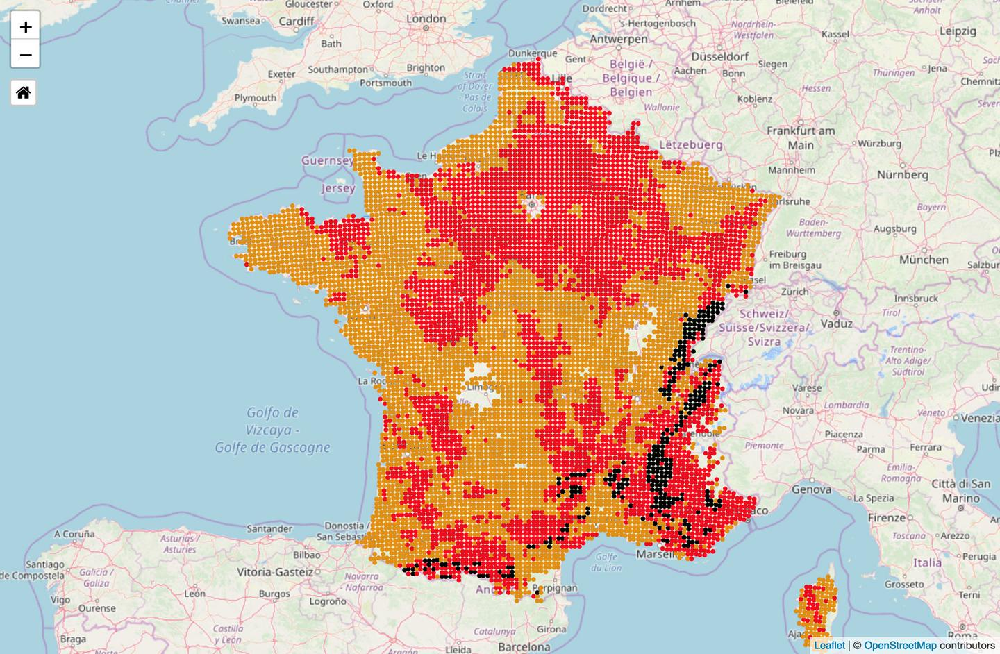

Vous trouverez sur cette page le descriptif de ce à quoi correspond une situation de crise (en rouge) et de pénurie d'eau potable (en noir). Nous avons essayé de le rendre très concrêt. La carte interactive de la page d'accueil est présentée ici sous forme d'image, à titre illustratif (projection printemps 2050).

Situation de crise. Les sols sont extrêment secs. Presque toute l'agriculture, l'industrie, les citoyens, n'ont plus le droit d'utiliser l'eau en dehors des usages prioritaires (eau potable, hôpitaux etc.). Forêts et rivières sont durablement impactées.
Concerne la saison et la saison suivante. Si votre commune est en rouge au printemps la situation peut advenir au printemps ou en été.
Nous avons utilisé les données brutes de la sécheresse agricole qui viennent du laboratoire CLIMSEC (partenariat Météo-France, CERFACS et IPSL) sur l'anticipation des sécheresses à venir. En savoir plus (SSWI inférieur -1,4)
Les situations de crise concernent déjà aujourd'hui la majeure partie de la France métropolitaine, toute une partie de l'année. Une situation de crise se gère aujourd'hui de la manière suivante:
L'utilisation des réserves de l'eau est autorisée pour les activités suivantes: eau potable, salubrité, abreuver le bétail, pépinières avec un système d'irrigation localisé, maraîchage avec un arrosage léger de nuit, (sur certaines régions) arrosage des jardins de nuit (20h-8h) au pied des plantes.
L'utilisation de l'eau est interdite pour les activités suivantes: irrigation grandes cultures, prairies, piscicultures, alimentation des plans d'eau, arrosage des pelouses, lavage de véhicule, piscines, etc.
Comment est-ce qu'on peut affirmer de tels impacts?Notre collectif n'a pas encore les ressources suffisantes pour vous représenter les zones en rouge de manière exacte. Mais nous allons réussir à le faire. Explications:
Si vous êtes localisés sur des très grands aquifères souterrains (à proximité de Paris, le Dauphiné, bassin Aquitain, etc.) l'interdiction va porter avant tout sur les eaux de surface. Mais pas les eaux souterraines, en tout cas pas avant des dizaines d'années. Ce sont des grandes réserves d'eau souterraines qui mettent longtemps à se vider - et avec nos moyens du bord nous n'arrivons pas à estimer en combien de temps et pourtant on y travaille. Ce dont on est sûrs c'est que ce ne sont pas des réserves illimitées et qu'elles mettent beaucoup de temps à se reremplir. Les données seront mises à jour dès que nous les aurons collectées.
Pour le reste: si plus de la moitié du territoire français était en situation de crise avec interdiction d'utiliser les eaux de surface et les eaux souterraines en 2018 et 2019 c'est justement car la majorité des ressources sont beaucoup plus modestes. Les restrictions concernant l'eau nous auront montré combien les réserves étaient critiques et précieuses. Et dans ce cas la carte des zones en rouge est réaliste.
Nous attirons votre attention sur le fait qu'à l'avenir les réserves d'eau souterraines se rempliront de moins en moins avec les sécheresses et qu'à l'avenir elles vont diminuer de volume.
Pénuries en eau (dont potable): plus de 10% des communes risquent des ruptures de l'alimentation eau potable durant plusieurs semaines/mois. En plus des sols extrêmement secs.
Une commune sur dix sur un territoire en noir risque une pénurie d'eau potable plus plusieurs semaines / mois au cours de la saison que vous avez sélectionnée ou la saison suivante. Si vous avez sélectionné "Printemps" et que le territoire est en noir cela signifie que nous estimons qu'une commune sur dix risque potentiellement une pénurie d'eau potable au printemps ou en été.
Plusieurs centaines de milliers d'habitants de la France risquent des pénuries d'eau potable plusieurs semaines/mois par an à partir de la deuxième moitié du XXIème siècle. Si la situation ne concerne pour l'instant que "quelques" dizaines de milliers de personnes sur la métropole, la situation va s'étendre et dans la majeure partie des cas il nous semble possible de réagir de manière ingénieuse. Dans d'autres cas plus rares - comme les communes isolées qui dépendent d'une unique réserve d'eau vulnérable - les pénuries semblent difficilement évitables une partie de l'année. Notre regard se tourne vers vous.
Seuls les territoires à risque sur des reliefs à calcaires compacts sont pour l'instant représentés sur la carte. Pas encore les territoires à risque sur des roches socle, sans quoi le territoire serait beaucoup plus conséquent.
Exemple de situations où il est temps d'y réfléchir.
Notre docteur en sciences en hydrogéologie nous a indiqué qu'environ 30% des sources à petits réservoirs des reliefs à calcaires compacts finrait par tarrir une partie de l'année. Si vous habitez une commune dont l'alimentation est liée à des sources à petits réservoirs, que vous n'avez pas de possibilité de vous brancher/raccorder à une autre commune et qu'un forage profond est impossible (ce qui est le cas sur beaucoup de territoires). Alors oui les sécheresses prolongées mèneront sûrement à des pénuries d'eau potable inévitables.
Exemple d'une appropriation de l'eau pouvant mener à une pénurie et sur laquelle nous pouvons agir.
Nous sommes au coeur de la sécheresse prolongée dans une commune de 4000 habitants. La rivière qui alimente la rivière est elle-même alimentée par une autre rivière qui coule plus haut. Les communes "du haut" ont bétonné les fissures par lequelles l'eau s'écoule pour alimenter la rivière de la commune en contrebas. La commune de 4000 habitants a continué d'utiliser l'eau "un peu comme d'habitude" et n'a pas ou peu de réserves.
Exemples de situations pouvant permettre à des communes de ne pas tomber en situation de pénuries plusieurs semaines/mois
L'utilisation des réserves d'eau restantes peut être autorisée pour les activités suivantes eau potable, salubrité, abreuver le bétail, pépinières avec un système d'irrigation localisé, maraîchage avec un arrosage léger de nuit, (sur certaines régions) arrosage des jardins de nuit (20h-8h) au pied des plantes.
L'utilisation des réserves d'eau restantes est interdite pour les activités suivantes: irrigation cultures, prairies, piscicultures, alimentation des plans d'eau, arrosage des pelouses, lavage de véhicule, piscines, etc.
Comment est-ce qu'on peut affirmer ça?Pour les sécheresses des sols nous avons utilisé les données brutes de la sécheresse agricole qui viennent du laboratoire CLIMSEC (partenariat Météo-France, CERFACS et IPSL) sur l'anticipation des sécheresses à venir. En savoir plus (SSWI inférieur -1,4)
Pour les mesures d'interdiction ce sont celles qui précèdent presque toutes les pénuries. En situation de crise de nouvelles interdictions apparaîssent et concernent ... douches, lave-vaiselle, etc.